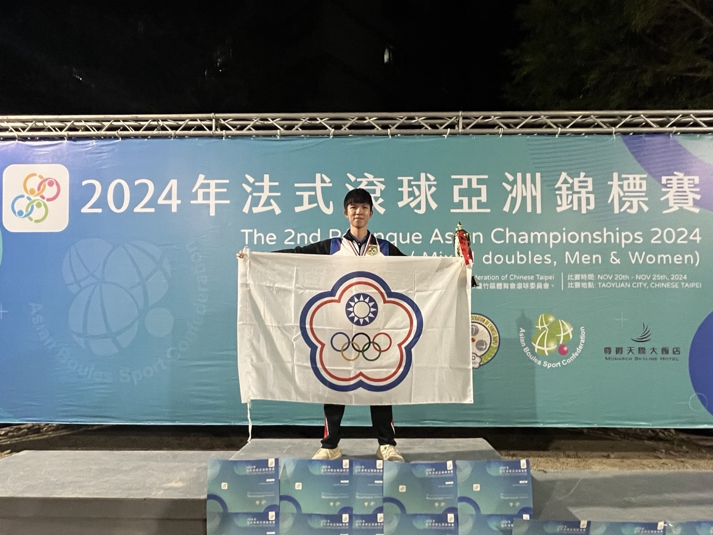
我喜歡用科學的角度研究運動，其中法式滾球最讓我著迷。因為它不單是技巧，更結合了人體動力學的精準控制、球體運動學的物理碰撞機制。
另外，戰略思考與運動心理學（調節壓力與專注力）在滾球中更是重要。我會用我所學到的知識，以科學化方式解析這項運動，這裡收藏著我的研究成果還有經驗分享，歡迎收看！
整理了我多年來的實戰經驗與科學分析，希望能幫助你更精準地控制每一球。
這裡是我的滾球回憶錄！
關於為什麼會接觸到法式滾球，要先從國中七年級參加桌球社說起，那時參加桌球社的帶社團老師是後來的教練陳O昌老師。國八選社團其實我想跟同學一起參加羽球社，但總是第一時間就爆滿，就接受老師的邀請去法式滾球社（其實之前看別人玩就超想玩玩看）。
玩不到兩個月就被找去參加比賽，記得預賽三敗就淘汰了，在這之後還參加臺北市中正盃及青年盃一樣八強止步。
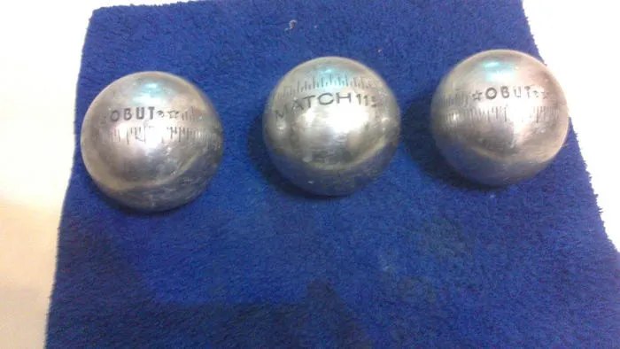
一年後與林O翰組隊配上學長鄒O丞在民國100年臺北市中正盃青少年組拿下第一名，從這次之後我們三個人組成南港高中A隊開始創下好一陣子的不敗紀錄。
在高一時當上隊長，其實隊長沒要幹嘛，比較有用的是鄒跟林比賽吵架時我就會跳出來主持，他們就會說聽隊長的話然後停止吵架。
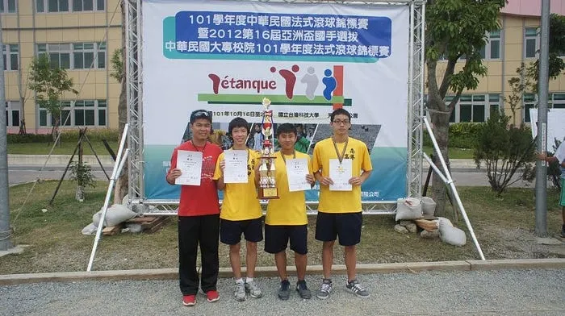
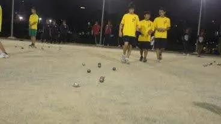
高一下臺北市青年盃，以前的青年盃還沒有分男女組，居然在四強遇到國小同學陳O庭，教練還跟永春高中的教練打賭飯局，誰知道不賭之前一路贏的我們就真的倒了，那次我回家的路上鄒跟林都不敢跟我說話，然後我就自己默默地走掉…第一次嚐到輸球是這麼難過。
在那之後我更認真練球了，我想一直贏下去，但不是努力就一定會有回報。
沒錯，我又輸了一把，而且還是全國賽，那次第一局就掉了5分，至今都還記得決賽林和鄒緊張的神情，前所未見，他們跟我一樣都很想贏，但老天還是要給我們個教訓。
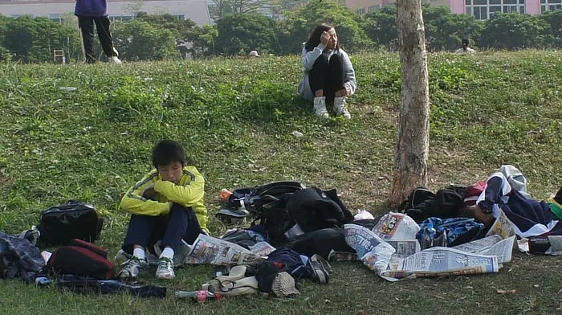
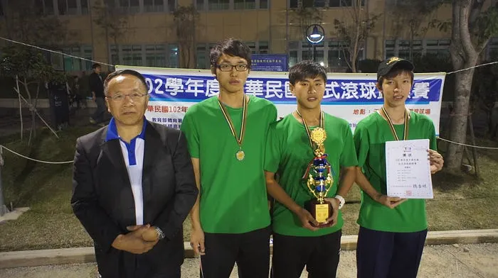
一個月後的臺北市中正盃，算是對比賽有了新的認識，漸漸能接受有輸有贏這件事，兩校感情好到結束會一起合照，場上對手場下朋友。#黃Ｏ詠居然這時候就在
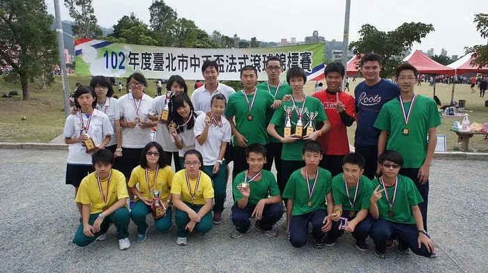
之後因為校內舉辦班際排球比賽，因此對排球產生極大的興趣，每天都在狂練排球，同時還是要兼具滾球的練習。外校的人都以為我要放棄滾球，但其實在全國賽前一個月我完完全全不敢打排球，深怕受傷的同時想在最後一年拿下冠軍，那一個月每天都相當煎熬，賽前的壓力無時無刻都在轟炸我。
高三的全國賽辦在臺南，這也是第一次出外縣市比賽，爸媽還特地開車下來看我打比賽（因為鄒已經畢業，換成謝O濂跟我們一隊）。在決賽時5比5平手進入最後一局，我開的第一球其實超近但對手花一球就卡轟（定桿），導致謝跟林各花一球射擊都沒中，當下真的感覺要輸了，林還問我：怎麼辦==？我想了一回：
我來吧！
站上擲球圈準備丟出手上剩下的一顆球，我只想著要丟直跟把力量出完，結果那球其實大力了，但運氣超好帶走JACK直接讓局面大逆轉，這球直接成為致勝分的一顆，現在想想真的是老天眷顧。
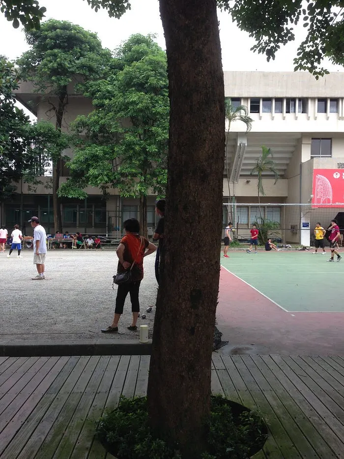
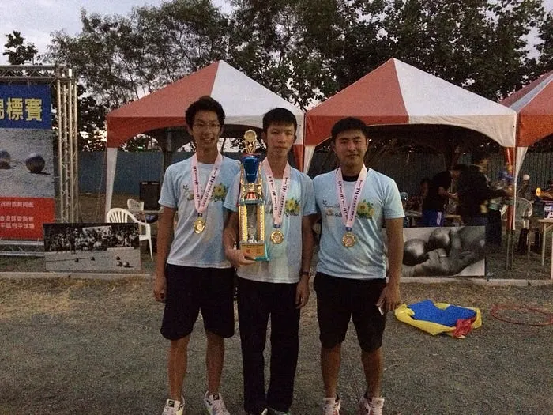
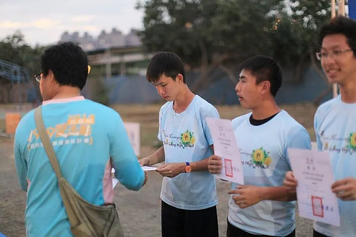
就這樣結束我國高中的滾球生涯，未來預設自己進入北市大想培養第二專長（排球），同時要好好顧好課業不要像高中一樣荒廢了，但計畫總趕不上變化。
還尚未入學的暑假，就被告知要每週一到週六全天集訓，這豈不是宣告我的暑假沒了嗎？但我一開始不懂環境就是乖乖聽從指示，每天從汐止搭超久的車到天母運動公園練球到晚上9點，但我常常看到我的同屆隊員跟學長用各種理由擺脫練習，我極度不悅因為暑假規劃跟高中同學去單車環島，必須勤練車跟規劃行程，所以我也用了一個很瞎的理由後來都沒去了。
開學前有一場高雄的比賽，這是我第一次脫離固定班底跟他人組隊參賽，賽前一晚我的兩位隊友王O貿跟黃O軒居然打LOL到11點多，這件事情當時我超級無法接受（而且他們LOL打得超爛），結果不意外的三敗預賽淘汰，我直接氣到當晚收行李北上回家。離開南港後我適應不良，這裡的練習模式跟同儕…唯一開心的就是練完10點多跟在別校的老隊友林O翰聊聊天，說說各自對新環境的不適應及懷念以前一隊的時光。另外鄒O丞已經在北市大待了一年，沒想到以前那麼熱愛滾球的他已經變成應付教練的選手，有次他也在捷運上跟我說丟球很開心，但被逼的話就沒辦法開心打球了。開學三週後，還有其他的種種原因，我就休學了。
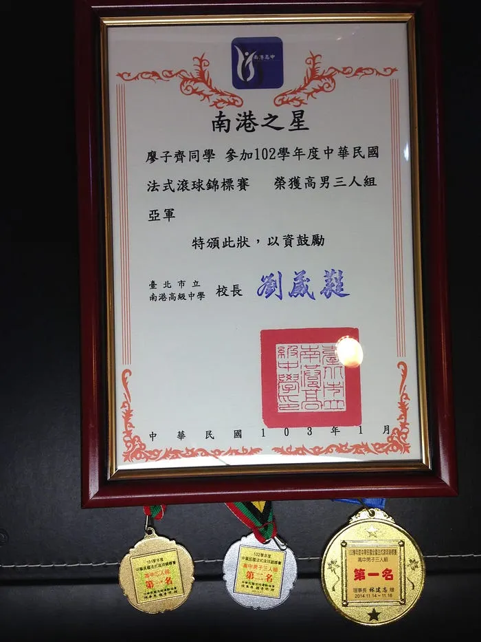
休學剛開始我每天還是回到南港練球，高中教練說我狀況好到不比賽太可惜，但我堅持不參加任何比賽，不過還是會到場幫學弟們看看比賽狀況，扮演助理教練的角色。後來漸漸就淡出了，變成完全不丟滾球也沒差的人，有次我爸在等湯包時跟我說復學後就不要再練滾球了，我心想我從來沒要把這個當飯吃，也沒有要繼續練的意思，在學期間完完全全是被逼著練球的…
接下來將近三年的時間，我除非有王O迪找我打球不然我是不會主動碰滾球的。復學第一件事就是找大學教練吵架^^，我表示國高中是一般生，在大學實在沒辦法跟上這種體育班的訓練模式，所以我提出退隊時他就威脅我不練球就休學，好在系主任在旁邊聽到時幫化解這場戰爭，不然我一定繼續跟大學教練吵到他放棄。在我大二時那位教練就自己退出滾球教練的身份，所有隊上的人都期待我歸隊（包括我的高中教練），但其實我根本就不是因為教練的關係不丟球，而是我想要退出選手的身份不然沒完沒了。這期間還是有被找去參加一些比賽，跟自己的老戰友重新組隊真的相當開心，還拿了一個中正盃第三名，覺得這就是我的理想狀態，當興趣玩玩偶爾比賽。
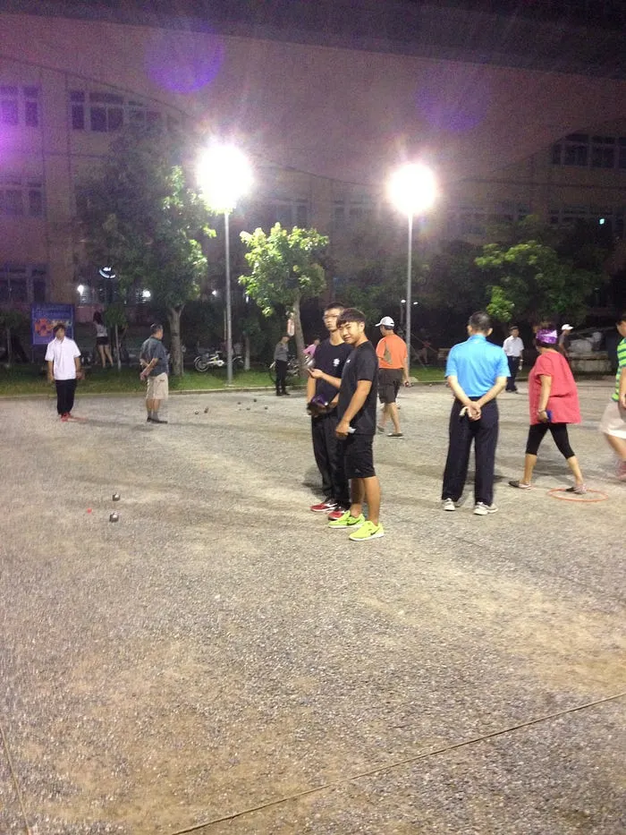
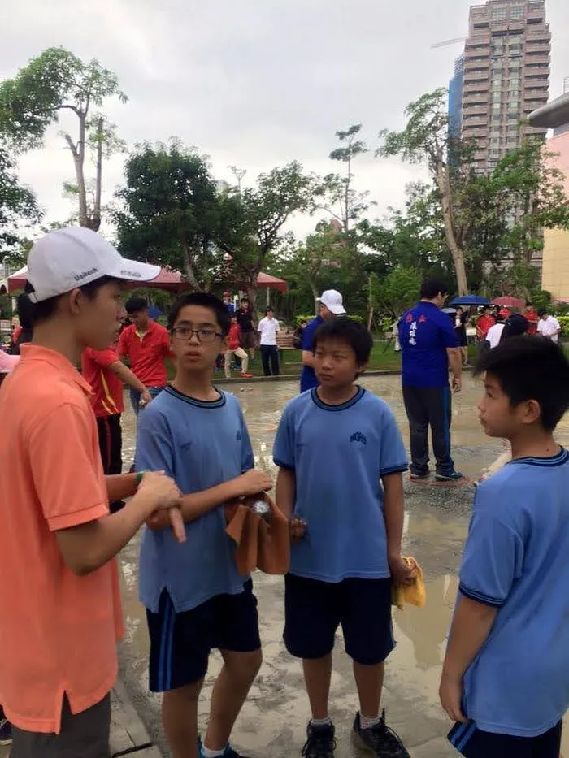
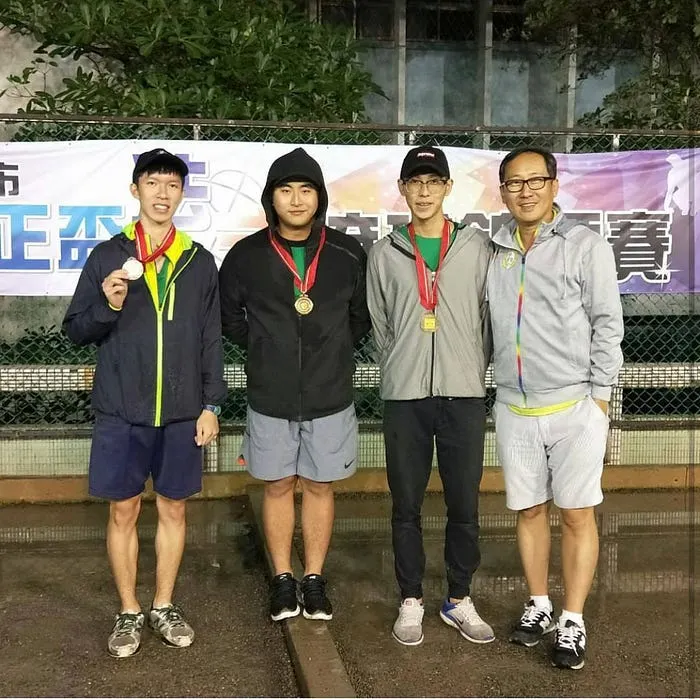
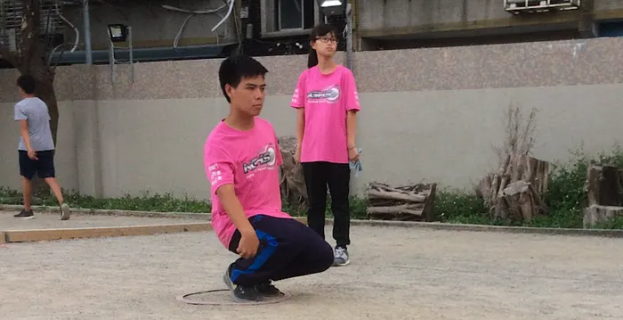
2018年7月舉辦男子世界盃國手選拔賽，我意外的被王O迪找回去當隊友，其實我第一時間是拒絕，他說服了好多次我最後才答應。回到南港跟他們一起訓練，其實我知道高中教練及另一隊友闕Ｏ濂是持反對意見，認為我根本沒有要好好練球的意思，所以在賽前三個月的練習我是從來不缺席跟遲到的。不得不說當時覺得我兩位隊友都相當優秀，所以真的相信只要自己打好就能順利選上國手。結果預賽三敗淘汰，當下真的心碎滿地，回到台北時整個暑假都維持每天練球，想要趕快讓這個失落感淡掉，也在7月生日許願說我一定要再拿下一個滾球冠軍。從那時開始就可以算回歸滾球隊的生活，同一時間也正在做滾球的生物力學研究，所以我的生活又漸漸充滿了這項運動。
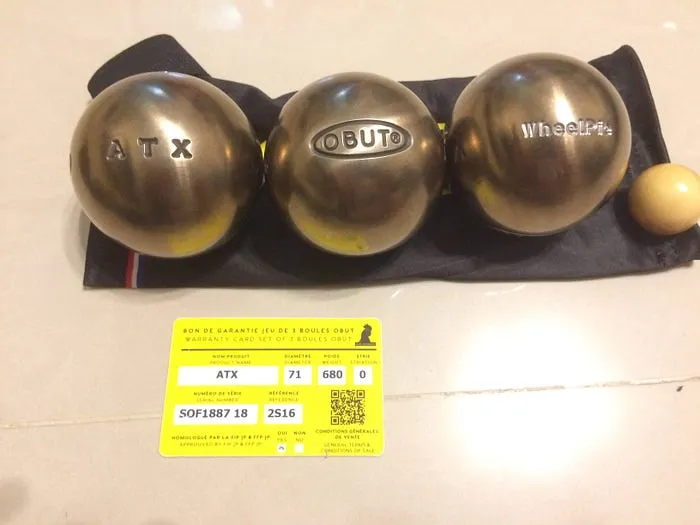
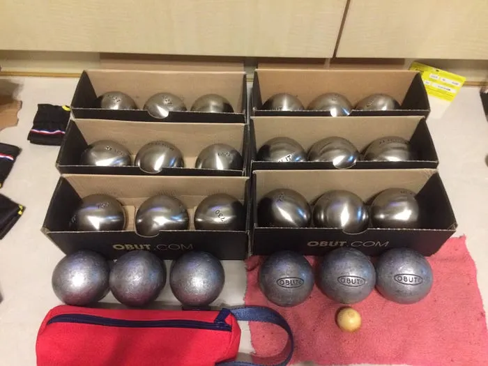
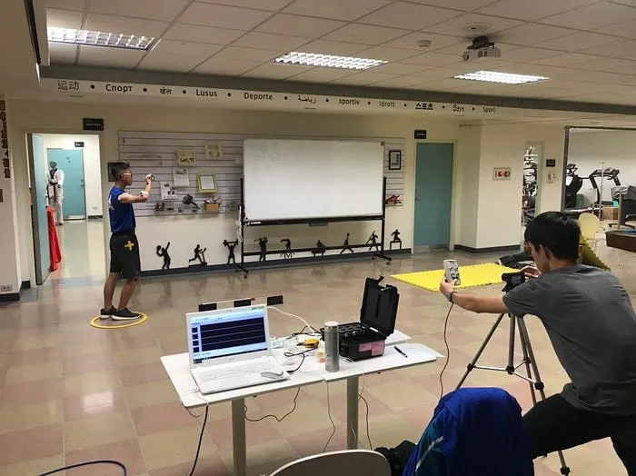
大二下陸續參加了蘆竹盃、臺體盃，都在外縣市要住宿，開始跟隊上的人熟起來，但我練習常常一週只去一次，其他時間都忙著做實驗。
108年全國大專盃（大三）我覺得是很有機會實現冠軍願望的一次，雙人賽跟前一屆冠軍王O貿、三人賽一樣跟王O迪、闕O濂（算是新固定班底），而個人射擊賽總是第一輪就被淘汰所以每次都當去體驗。結果第一天雙人賽不幸八強被淘汰，覺得自己Pointing實在太差，當晚就想說好好放鬆打桌遊，反正明天射擊賽應該凶多吉少。俗話說初生之犢不畏虎，在眾多國手集結的一屆大專盃（前兩輪總分沒有60是進不了第三輪的），居然30分通過第一輪，有這樣的結果已經非常滿足，後來第二輪又打了32分排名第5 or 6進入八強PK賽。為什麼是5 or 6呢？因為下圖這個複製人周O叡預賽打了跟我完全一樣的分數，包含細項5分、3分、1分的球數也完全一樣，直到PK開打前才被大會叫去抽籤決定順位，結果他先去內戰王O迪而我面對文化大學的選手。人生首次PK賽真的興奮到不行，前四關就轟了37分又晉級了==，開始覺得該不會就是今天了吧！在四強內戰自信心爆棚到覺得每一顆球都一定可以得3分以上，前四關又打了38分個人新紀錄勝出（這紀錄停滯了3年才又突破），最後冠亞賽場面搞得有夠緊張，一堆人在看，加上有點精神疲勞（專注力耗盡的感覺），20比20進入第五關JACK，心想絕對不能錯過這次機會，還好JACK五年後又再度眷顧我，第一顆就打中以25比20勝出。當下的心情其實有點複雜，因為一整天打最低分就是冠亞賽，但事後想想贏了真的好感動！我辦到了。 這次成就也讓大家認識到我其實是有射擊能力的。
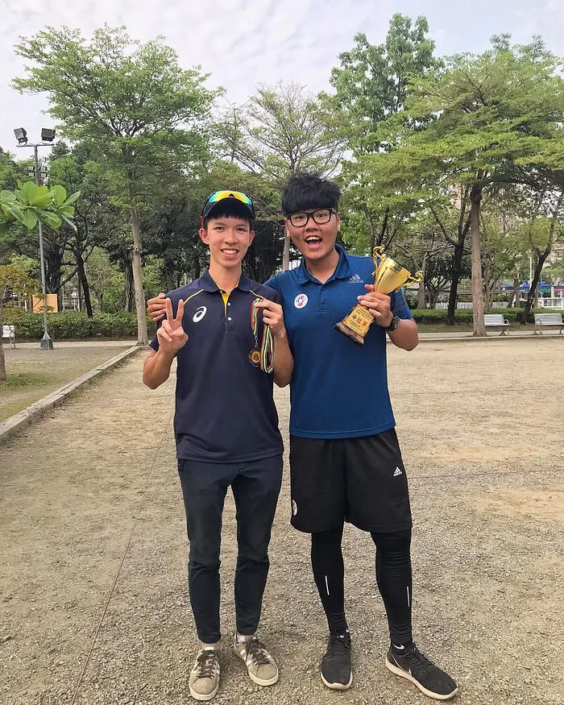
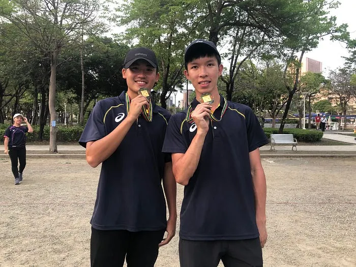
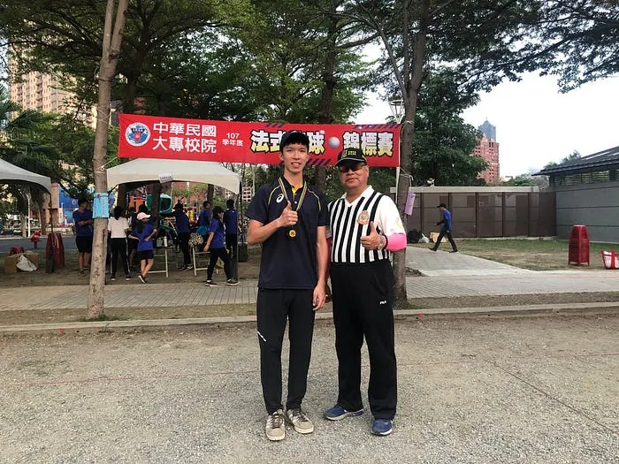
大專盃後練球時間又更少了，主要是希望時間花在準備研究所上，當然還是有參加像鄰舍盃這樣的小比賽。覺得跟高中時不一樣了，拿下亞軍也非常開心。
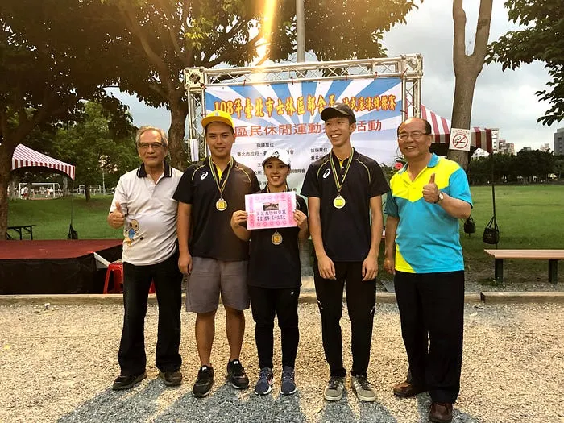
暑假實習根本沒練球，假日跑來臺東打比賽還打Shooter，印象中超熱。
秋季盃臨時被找去當候補結果都在場上打先發。
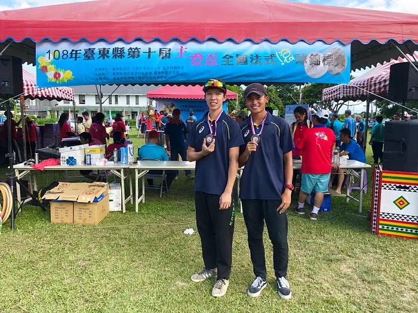
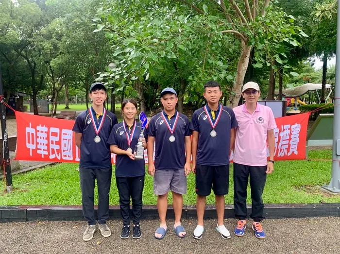
108年9月國家隊選拔（大四上）帶著最後一戰的心情去打，因為之後要當研究助理沒時間打球，同時還要準備研究所甄試一堆備審資料。結果當然不理想，這次比賽完全沒有達到放鬆的感覺。
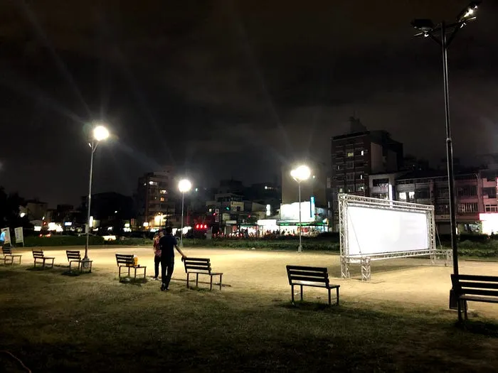
年末的一場小比賽，我當作是在北市大滾球的告別戰，在這之後我把球收起來將近半年沒碰，認真的為人生下階段做準備。這也是第一次跟王Ｏ霖組隊，我只記得我們定位大輪轉了幾次然後拿下冠軍，真是神奇。
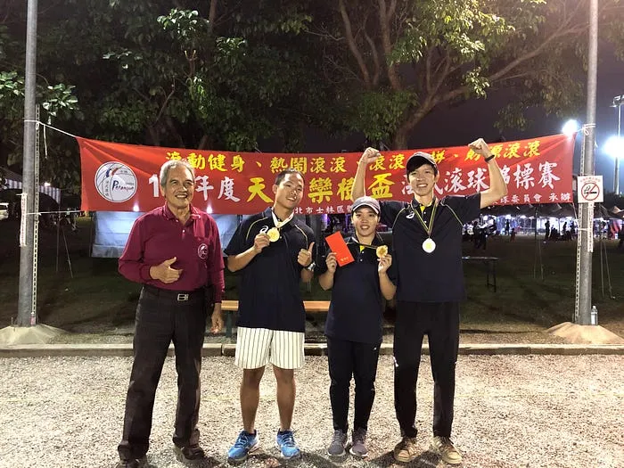
隔年4月被找去補臺北市選拔的三人賽，我記得兩位隊友王Ｏ迪、闕Ｏ濂當時完全喪失射擊能力，只好由我這個沒練球的去打Shooter。結果自然不會好，但他們雙人賽居然選上了，滾球真的是不可思議的運動。
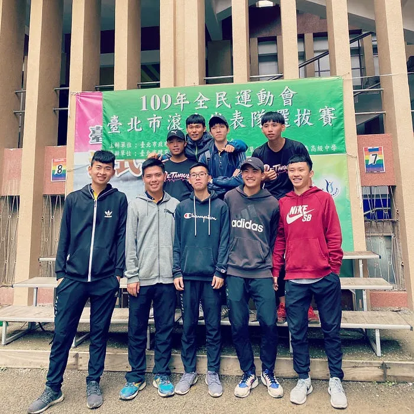
因為COVID-19疫情下大專盃被延至7月份，不巧碰上台中榮總實習的第一週，但我實在太想去就先請了一週的假，還因此跟我的指導教授吵架，沒有人可以阻止我打球^^。至今還是很慶幸當時有參加，這些比賽發生的回憶到現在我們還是常常會提到。
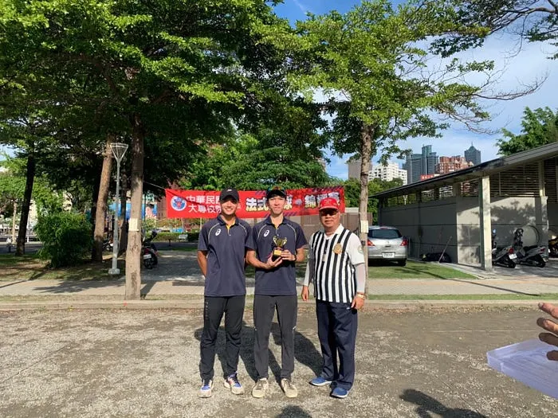
接下來進入北醫時期，超幸運的是上研究所的學校居然還有滾球社，校內也有場地可以練習，不過北醫校隊是屬於一般組，所以我只能單獨參加公開組個人射擊賽跟一對一單挑賽。在大多時候我會去永春高中找周O叡練習，同時北醫的練習我一定參加，希望能兩項都拿下名次，但結果大概就是擦邊球吧。
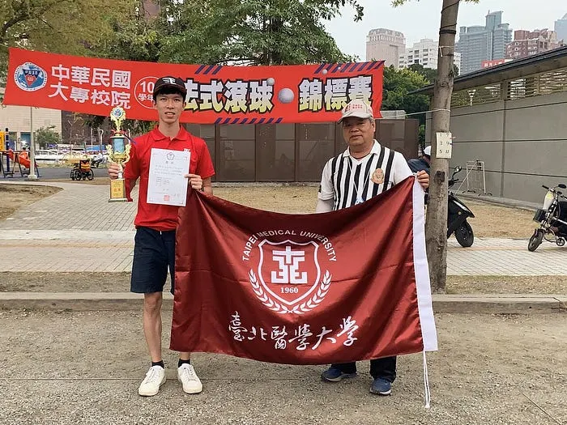
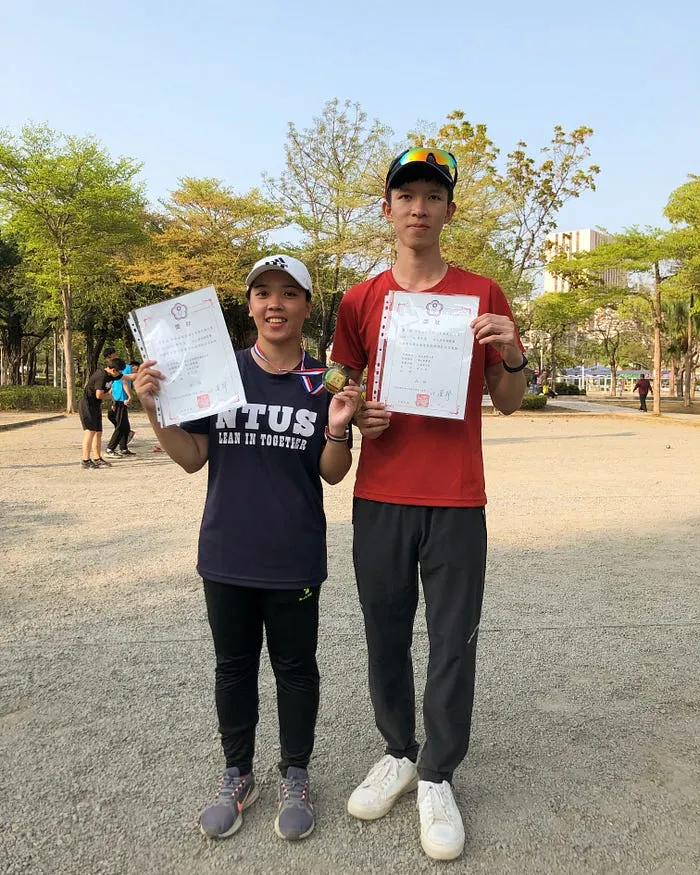
好像不知道從什麼時候開始狂拿亞軍，除了大專盃代表北醫外，其餘小比賽回去跟舊隊友組隊參賽，我們總是取一些奇怪隊名參賽，也沒有一件比較正式的隊服（白素T上場）。這時期都在三人擔任Shooter的位置，好像單純因為我喜歡射擊XD，其實都還打得不錯。5月份很不幸的疫情三級警戒，所有比賽取消，大家都悶在家沒練球，直到7月微解封才約了一次橋下練球，所有人的狀況差到一個不行，我甚至完全忘了怎麼射擊。
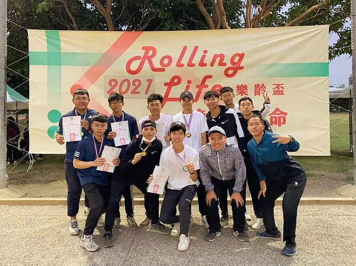
110年的比賽真的少得可憐，有舉辦我就非常感激了，但年末大家都非常認真在練球，因為隔年3月將會舉辦臺北市選拔，我也是第一次認真準備這個比賽。從那時開始我很認真的想把Pointing練好，總覺得隊上的大家太注重在Shooting上都沒人好好當Pointer，不如我來當第一位專業Pointer吧。在此同時購入了第三組滾球MATCH+，單純因為高拋需要比較不會彈的球所以換掉ATX，不過使用上我覺得沒有差異，遇到硬地會彈就是會彈。
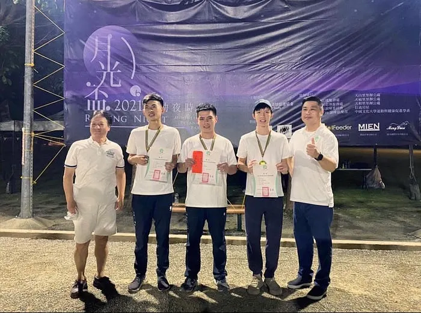
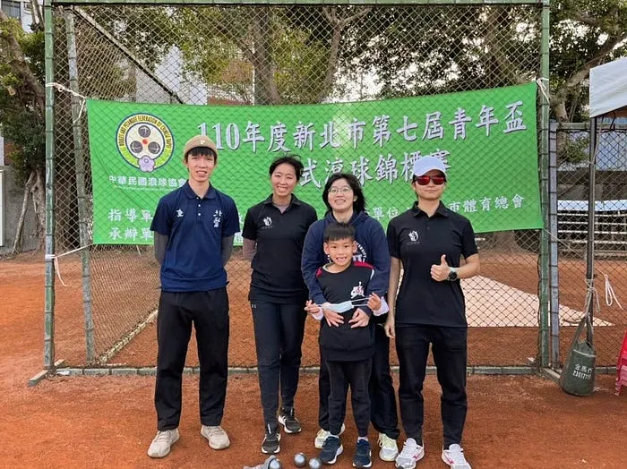
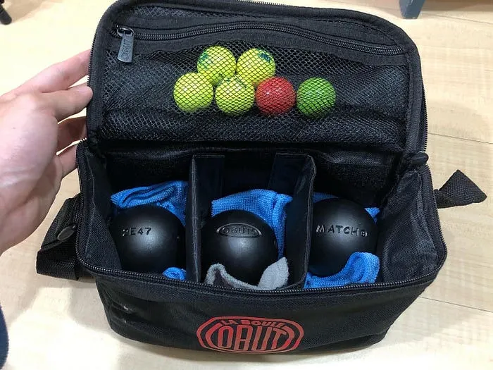
111年第一場比賽就是3月臺北市選拔賽，這也是我創立「三葉草」隊伍的第一戰，我印象第一天雙人賽我一開始有點緊張中高拋怎麼都丟不出來，畢竟很久沒比賽然後我覺得大家都超想贏下這個賽事。好在隊友周O叡前面夠強大可以撐住局面，讓我在八強後進入一種心流狀態，看到其他隊員都拿出各自最佳的狀態，可以跟他們交手覺得非常興奮。第一天我很幸運的就冠軍，拿下雙人縣市代表權。
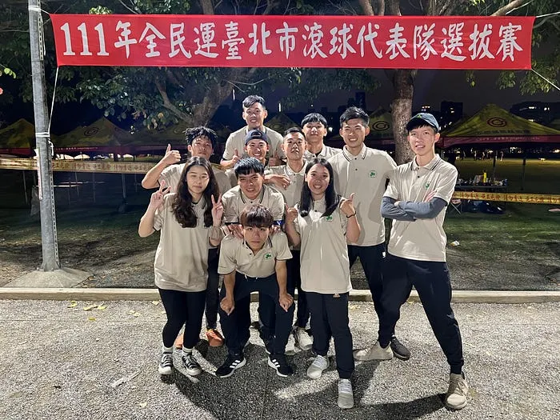
第二天三人賽就是惡夢開始，這是不知道第幾次跟王Ｏ迪還有闕O濂組隊，以往我們最佳成績就是第三名，其他比賽都慘到不行。結果這次八強遇到台科又大當機，其他兩隊在四強碰頭保一隊上冠亞賽，同樣當機到被國中生打趴。這天的事情至今我們9人都無法接受，大家真的太想贏了造成反效果…就不說最後一天射擊賽4強有三個隊上的人（我怎麼上四強的==），還是把攔不住別隊的人包下234名。總結三個項目的代表權我們只拿下一個雙人代表，真的是慘到不行的一屆。
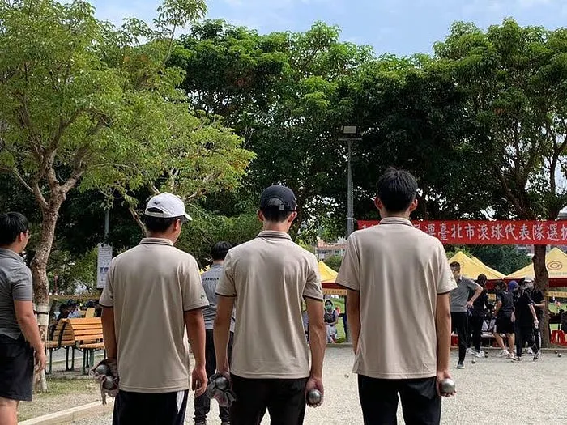
隔一週南下代表北醫參加大專盃，也是最後一屆大專盃，在第一天的射擊預賽我打了40分新紀錄，但老實說我覺得狀況非常差。就不說同樣三位三葉草的隊員分在不同學校上四強，結果又把冠軍讓給人家是什麼意思==不過隔天的混雙賽我是信心滿滿，也非常開心終於有團體賽了（3顆球有夠寂寞且枯燥），雖然O儀是一般生但這種帶人打公開組的感覺反而讓我表現更好，只可惜最後JACK打中了卻沒出界（這次JACK女神不要我了），四強止步。
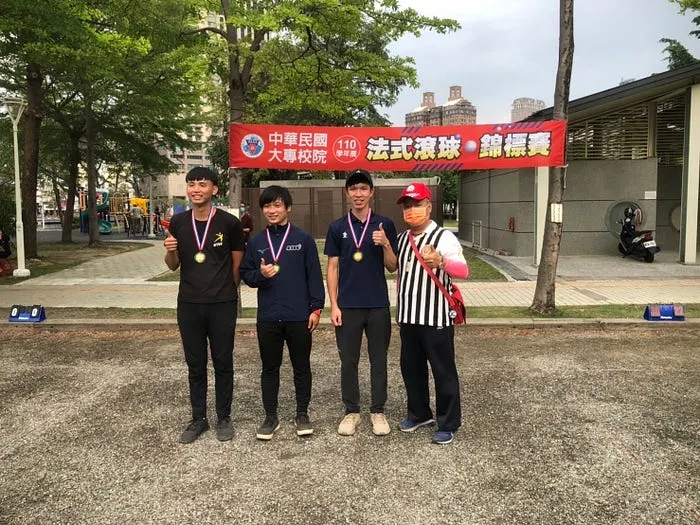
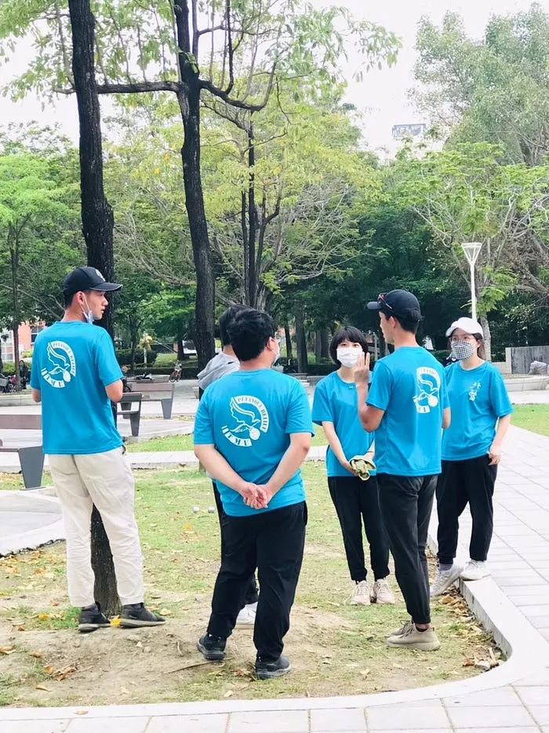
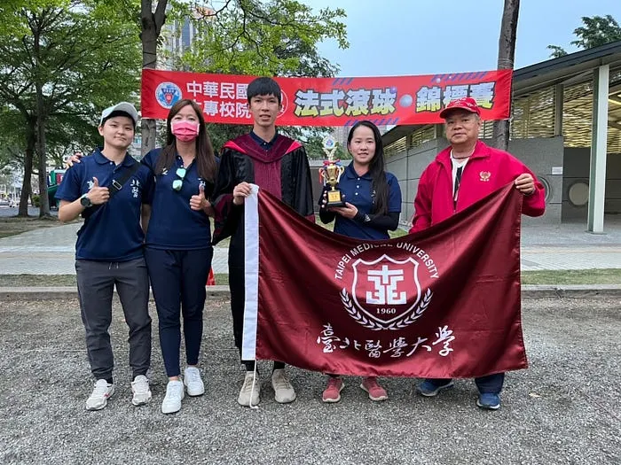
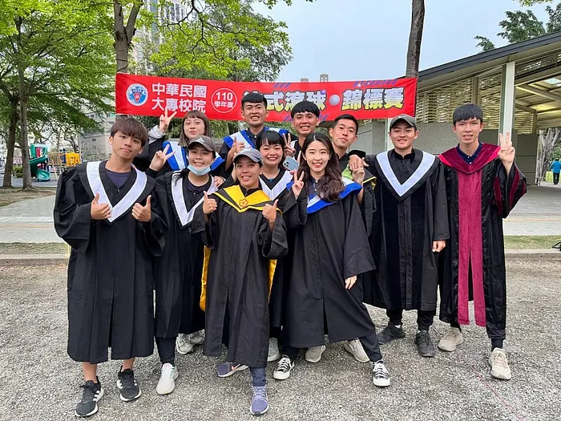
在兩次大賽後開啟多次的戰敗紀錄，為了10月份的全民運動會我幾乎都跟周O叡組一隊，而且一定是給他射擊不論他狀況再差。
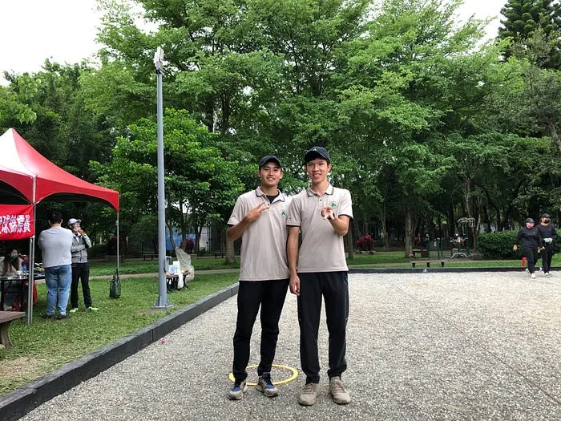
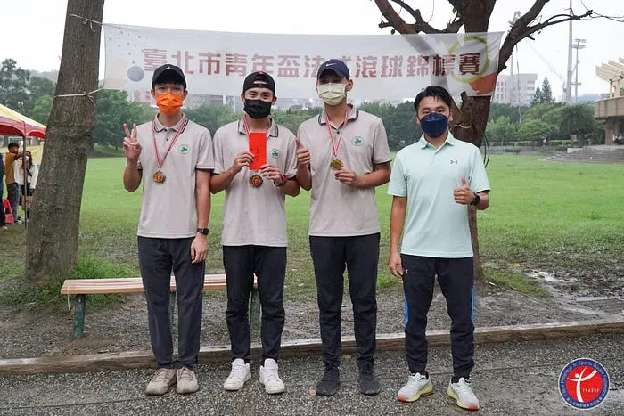
難得有沒跟周O叡一隊的比賽是樂齡盃，這次分隊友是直接用抽籤的方式決定，現在想想真的好歡樂。
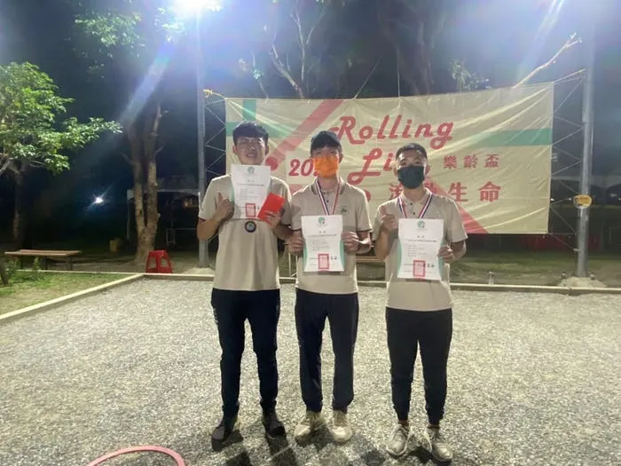
法式滾球大獎賽原先在110年就要舉辦了（總獎金15萬），但因為疫情延到隔年暑假辦熱身賽，這個賽制非常新鮮是團體賽，分別出戰一人、二人、三人賽去搶點。而我跟王O貿或蘇O郡組雙人都可以順利拿下兩點，有趣的是自己贏下分點還是會很擔心別點輸掉，果然最緊真的還是看球賽了…。是說總算不用擔心會八強遇到內戰的問題，因為大家都同一隊。
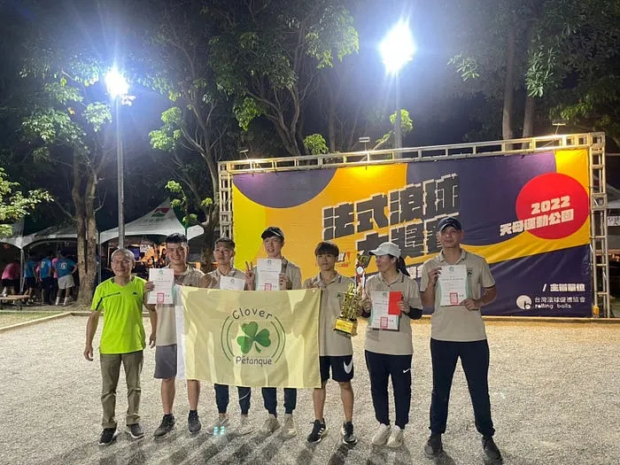
嘉義縣主委盃同時也是111年全民運的比賽場地，但因為只有三人賽所以直接由替補邱O翰組上來當作第三人。只記得那場比賽我打得相當不佳，最後甚至還落淚。
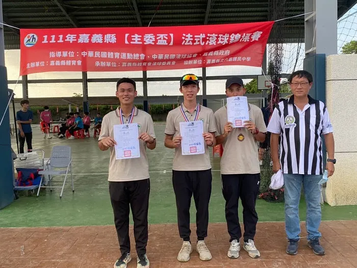
連續三週的賽事，最後一週臺東主委盃真的是非常放鬆的心情去應戰，每天最期待晚上逛美食跟玩桌遊。八強遇到三葉草內戰只好撿第五名。
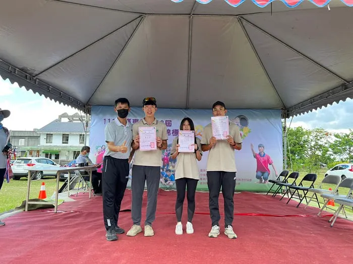
謝謝士林滾委釋出名額給三葉草，以前在北市大理所當然會有名額，畢業後這個機會顯得特別珍貴。
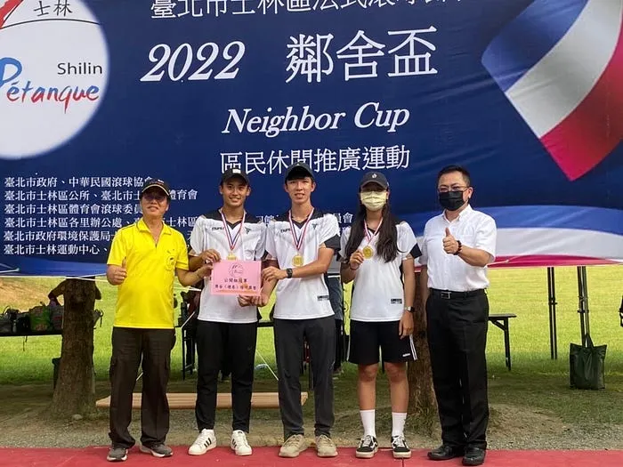
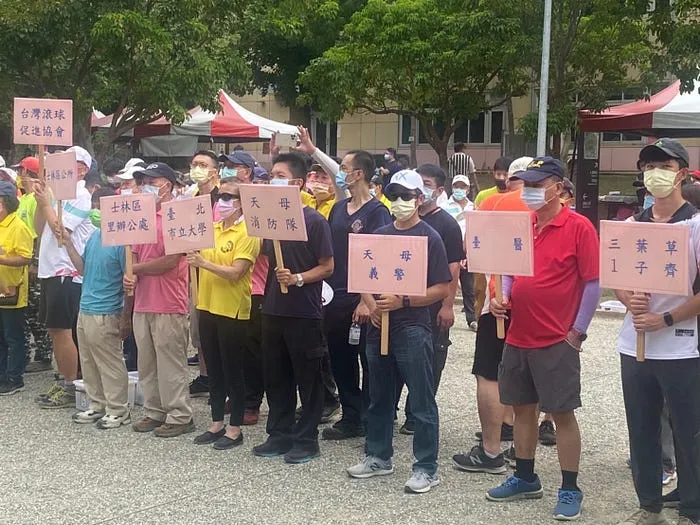
睽違3年後終於舉辦國手選拔，很高興隊友王O貿一開始射擊賽就冠軍選上，也很意外這三年大家退步了超多，居然打22分可以進入第二輪…然後我剛好打21分，但我沒有特別在意，因為我知道這年的射擊狀況一直不佳。三人賽配上至周O叡一度闖到勝部四強，不幸敗給上屆108年選上的國手陣，當下真的心碎滿地聽不進任何話，經過一段時間休息後準備下一場的敗部復活賽是三葉草內戰。其實我們這隊是當時分隊上認定較有機會的A隊，但比賽總是充滿不確定性，也是比當下各自的表現，我知道不能被上場的失敗影響到，所以這場我反而更放開來打，不過最後還是被逆轉倒下，這一年的國手夢宣告結束。這幾天真的過得特別漫長，我想之前大家想選上臺北市代表隊的心情也是類似的吧，太想贏反而會有反效果。賽後不甘心的落淚，因為真的太想出去跟國外競爭，也覺得自己沒有100%發揮出該有的實力。
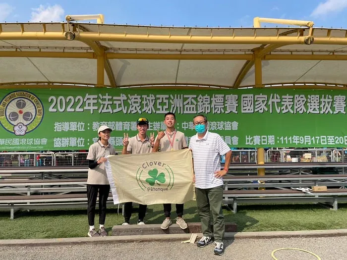
國選的隔一週是臺北市中正盃，在高張力的比賽後顯得特別放鬆，這次完成王O迪長期的心願跟我還有周O叡一隊，結果預賽就淘汰ㄌ，周O叡還直接給我走掉回家，不到一個月後就是全民運了我們比賽還打得亂七八糟XD。全民運前一週的蘆竹盃我配上蔡O君跟蘇Ｏ郡四強遇上周O叡那隊，居然又給我準起來，每次都覺得他在演我:)。這次蘆竹盃算是非常放鬆打的一場比賽，也難得不是打Pointer。
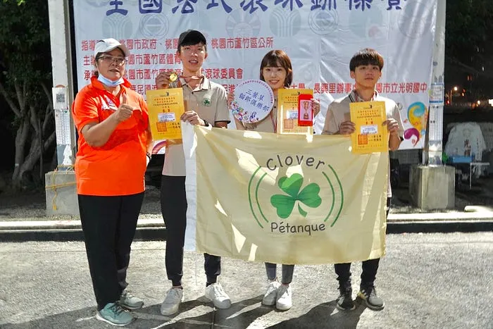
111年的重頭戲終於來了，2年一度的全民運動會辦在嘉義六嘉國中，這是我第一次當上代表隊，提前兩天適應場地，第一天相當炎熱且還沒適應場地，心裡多少有些擔心跟緊張，還好有第二天可以練習。比賽場地調整過後已經不是當初7月來主委盃的那種大石頭，剩下的都是軟土跟厚厚的細碎石，從預賽第一場我就相當進入狀況，也許場地真的太有利於我。另外看得出來周O叡狀況依然不佳但還是打得到球，不過也不擔心他打不到，因為在這之前我偷偷練了好多射擊應付這個需求，再不行還有候補邱O翰上來補位。還好一路上都非常順利，直到四強打雲林肉丸（選手暱稱）一度以12比0聽牌開場，結果從一顆9.9米被卡轟後局勢被大逆轉，接下來幾局的內容至今被我們討論好多次，真的太扯了…個人覺得運氣成分也很多，在最後一局被追到12比7差點被一口氣灌6分逆轉，還好人家沒打中真的鬆口氣==。冠軍賽心情上加減有被上場影響到，大概出了3球自認為比較不是理想的進球，繳了一局3進1後雖然分數領先，我還是果斷提出要換人。邱O翰上場就好像餓了好幾天的獅子一樣，第一局就灌了6分直接10比2穩定贏面，後面他甚至跟周Ｏ叡交換了定位換他來射擊，連續中了好多球對手根本招架不住，他完完全全展現了替補的價值（在這之前有很多人不明白為何是選他當替補）。能拿下國內最高殿堂的冠軍真的相當高興，也告訴自己辛苦了，這年花了好多時間在滾球上。
111年的最後一戰：法式滾球大獎賽，心想終於要結束了，疫情後的比賽多到不行。這次分點陣容除了第一場我上去打一對一之外，其他都按照上次熱身賽冠亞賽的組合，在四強遇到動能一、二點都倒以為要掛了，結果三人賽分數狂追到剛好總分相等進入射擊PK賽（團體賽的好處就在這，自己輸了別人幫你贏回來XD）。射擊的賽制也相當特別，一到五關分別由不同人去進行射擊且只比7.5公尺，很感謝大家對於我安排自己打第五關JACK的信任，雖然最後不用打中也會贏…，就在這麼驚險的狀況下闖入冠亞賽，對手幾乎是現役國手跟上一代國手陣容（太豪華了吧）。沒想到王O迪前面輸得一塌糊塗就在冠亞賽把單人的分點搶下來（1分險勝），雙人賽又意外的順利，前兩局就分別砍了5分跟3分（8比0大幅領先），對手只好提前換上楊O琳止血，最後依然達到13分提前結束比賽。能以冠軍做為今年的結尾真棒。
112年不像去年第一場就開胡，新的一年依然沒有脫離周O叡的魔掌（沒XD），第一次跟黃Ｏ祺組隊感覺他多少有點不自在，我也不是打Pointer所以戰局的發展往往不是我在主導，第一場狀況好到一度覺得今天要拿冠軍，結果第二場直接炸開，更不用說第三場。這是新隊服第一次上場，外套花了我好多心血去弄T_T（還有荷包），請大家要好好愛惜這個團體還有這件外套！
樹林桐花盃跟周O叡雙人組倒在八強，後來他emo到自己留下來練球不知道到幾點，我們其他人跑去吃火鍋。
銘傳大學黃O娟邀請我們三葉草參加蘆竹友誼賽，同時還來了國體大跟頭城的球友們，這天我練習當Shooter，但場地好落地打幫我提高了許多命中率。
脫離學生身份後大專盃仍然會來現場觀看，很開心北醫的滾球還有這麼多人參加，並且一般組女子單人王Ｏ珊居然二連霸，雖然他最後打一個我看不懂的策略，但還好運氣超好XD。以前常在賽場上爭奪的其他學校球友們也都紛紛要畢業了。
這年的蘆竹盃我跟周Ｏ叡還有蔡O諠組隊，延續上次友誼賽的定位繼續當Shooter！覺得還差非常多😭輸在十六強，大家一起打包回家哈哈哈，近期的三葉草總是早早被淘汰，許多人常會說怎麼可能，但球場上本來就沒有永遠的贏家，更何況其他人也一直很努力呢。
鄰舍盃跟蘇Ｏ郡還有林O珊組隊，仍然嘗試Shooter的定位，結果一個失控到不行預賽就輸了。
樂齡盃終於脫離闕O濂的魔掌，但結果是早早淘汰我甚至忘了當時發生什麼事，但只記得看周O叡從頭笑闕O濂到他們拿下第三名，果然樂齡盃不能少了老闕。
這一年的青年盃相當多人參賽，而且協會主辦都會有專業的轉播跟講評，這次回歸Pointer的定位，與林O玹還有周O叡一起打到第二名，一路上覺得我們怎麼這麼強，感覺這樣去選國手也有機會。周O叡也是久違的看到他狀況這麼好，很開心他經歷那麼長的低潮後能打出那麼好的表現，可惜我還是不太穩定導致最後輸掉了QQ。還有一球是周O叡打錯球超好笑，還好有卡轟而且轉換球權。
7月份迎來這年的亞洲盃國家代表隊選拔賽，在賽前其實我們三葉草內部在分組上已經有共識，但最後發生了一些意外所以我們拆成兩邊來報名（另一邊是台體大），不過開心的是這場比賽最終是由我們包辦了一二名。當然也希望選上的是自己，但這年發生的種種事情（就不贅述XD）難免對滾球失去熱情，後來一度還把專注力轉嫁到保齡球上（真愛亂搞），所以就結果來說我沒有特別在意，倒是挺在意王Ｏ迪一直糾結在我兩球沒打中的致勝球，但勝負的決定從來不是哪一個關鍵沒做好。
這一趟亞洲盃之旅我們自費一起去了馬來西亞幫選上的三位加油，永遠記得剛到球場時看到越南女子選手的丟球方式，那一刻真的相當震撼，後來還看了越南大叔跟泰國Jack射擊賽對決（53比55），真的是神仙打架。從這趟旅程後我又燃起了對滾球的熱情，好想要像他們一樣丟出那麼厲害的球，太帥氣了。另外，看著平常代表隊進場、跟各國選手交手合照到最終站上頒獎台，難免還是會希望站在場上的是自己，不過當時決定好好堅持練下去，總有一天會有機會的。
選拔後還穿插了一場水源盃，我跟王O珊第一次組隊，好像每次來樹林都會在八強的第一場地輸掉😂。
回國後的比賽，跟闕O濂還有蘇O郡的頭城聯誼賽及月光盃，開始回歸Pointer的定位重新好好學習，只記得常常打得不太穩定好像中高拋又開始做不好，也不知道是什麼問題。
112年的彰化理事長盃在槌球場舉辦，之前就有打過一次這個很滾的場地，因為10月剛入職所以練球時間變少很多的我，常常對自己也沒太多自信，還好蘇O郡一直鼓勵我，讓我記得自己其實是可以把球丟得好的。後段總覺得狀況不錯應該能拿下今年的第一個冠軍（也會是唯一一個，因為這是今年的最後一場比賽），結果四強還是輸給桃園的選手QQ。
2024第一場比賽，在高雄讀書的黃Ｏ祺找我參加台南的比賽，覺得很難得他們想打比賽又缺一，就特別跑來台南走走，與2023一樣是個預賽就淘汰的結果開啟新的一年XD，但後來跟大家一起去附近的球場打一個下午的球，也是覺得非常快樂及滿足。
第二場跟蘇O郡、陳O妤組隊參加宜蘭的宗宗盃，很多獎品的一場比賽，而且還每人送一些珠寶真的太酷了。
準備很久的臺北市選拔賽，冬天超冷還冒著風雨每天在天母練球。想起上一屆跟周Ｏ叡時他前三屆雙人都沒選上（名次四->三->二），所以我常常告訴自己不要雷到他，因為按照順序要拿到第一名了😂。今年大換血跟蘇Ｏ郡組隊雙人組及三人組，他也是連續三屆（六年）都沒選上代表隊，怎麼我都要背負這麼重大的任務@@，同一時間我已經是個上班族所以只能利用週末的時間全天練習，最後四強及冠軍賽蘇O郡真的是超群的表現，瘋狂的卡轟，但對手吳O芋也很厲害一直命中及卡轟，這真的是我打過數一數二刺激的比賽，還好兩年後的我真的有成長了一些，最終穩下來以13比10拿下今年的雙人代表權。隔日加入了王Ｏ貿，一直以來他都是個骰子型選手，我們大膽的讓他去打射手的結果就是他骰到了1，什麼都打不中就算了不知道他在緊張什麼==（沒練球還敢緊張啊…），後來還是換回蘇Ｏ郡去射擊，一路上的比分都滿驚險的最後一局才分出勝負，同樣拿下三人代表，這是我第一次辦到同時選上兩項目。前兩天都打滿賽程，晚上的睡眠其實都很緊繃沒睡太多，最後一天的射擊賽，我感覺到自己專注力已經快不行，預賽打了24分還以為要被淘汰了，結果第二輪啥都不想只想著丟好高度，動作胡亂撇還被我貓了一個37分，到了四強打了14分輸掉（對手16分），還有一顆Jack差3公分出圈，大概是老天覺得我還有不足，留給下一次的我好好加油吧！
113年鄰舍盃，感謝銘傳大學黃O娟老師借了吳O蓁給三葉草參賽，雖然他最後給我大當機，真的是心態有待加強😂。
蘆竹盃跟林O玹難得組隊，因為全民運的關係所以接下來的比賽都全部跟蘇O郡組隊。
畢業後兩年一樣有來現場觀看大專盃。
113年的樂齡盃闕O濂強勢回歸（又跟我同隊），不意外的是第三次樂齡盃合體一樣冠軍賽開搞，最後一局落後一分Jack被擺邊線就算了，還直接po一顆貼Jack，真的是被他打敗，笑到我很想直接躺在地上笑。真的謝謝他連續三次樂齡盃組隊都送我第二名榮耀。
青年盃前兩天我都在台中出差加班到非常晚，隔天一早又參加比賽，身體跟精神都非常勞累的狀態下，我真的覺得自己表現太差，甚至會發生一些我平時根本不太會犯的低級錯誤，拿了一個第三名，開始思考工作真的要這麼累到影響我打球的生活嗎
泛太平洋盃來了一些別國的選手（馬來西亞、日本、新加坡、香港、泰國等…），算是第一次跟別國的選手打球覺得相當新鮮。比賽過程中我已經明顯感覺到自己不如之前的狀態，早早被淘汰後我還是有留下來看完所有比賽，最後看到冠軍賽銘傳的甘O恩他們跟泰國的世界冠軍選手對決，覺得相當感動，好希望能站在場上跟他們拼看看，這一天我開始萌生了離職的念頭。
在泛太平洋比賽期間，跟林O庭他們隨口聊聊了全民運的事，就決定7月要一起出發來屏東場勘球場，真的是非常用心呢！結果球場完全還沒弄好而且還有超多野狗，只好跑來高雄的球場打打球然後逛街吃美食（意外變成高雄遊）。最後送他們去高鐵站還真的是分秒必爭，最後一分鐘送他們到車站居然成功搭上車了，太好笑。
8月初即將迎來兩場選拔賽，一場是亞洲混雙選拔一場是世界男三選拔，在這之前常常來蘆竹練一下球，被泰國人們找打比賽，還一直不停上訴😂。
第二次參加混雙選拔，找了王O珊代表北醫參賽，89隊的雙敗賽事打到天荒地老，而且我們總要用掉一條命才晉級。這三天的比賽我也睡得相當不好，賽程更是要打到晚上9點然後隔天8點開賽，還要開車回台北真的相當疲憊，第一天一度不太適應打射手的感覺，還好第二天複賽後某個時刻我就進入一種心流狀態，開始很享受比賽緊張的感覺，覺得打到最後拿下冠軍都是辦得到的。第三天的勝部八強賽我難免有點擔心自己的狀況，一天的第一場總是需要熱機，在最後一局平手的狀況下，我選擇了去射擊對方的一號球，只要打走就贏了，結果前面好好的就這顆有點失手，輸下了比賽的那刻又非常懊惱怎麼自己又這樣輸掉比賽（2023年國手選拔也是沒打到輸掉）。後來好好坐在場邊休息冷靜，掉到敗部的第一場遇到甘O恩他們，我一直把他們當作要選上就必須打敗的選手之一，甚至選前的睡覺都還會夢到在跟他們打冠軍賽，結果這場我的狀況超好一直卡轟很快就贏下比賽了。下一場遇上周O叡他們，王O珊一直以來的落點都打不太準終於在這個比較滾的場地顯露出問題了，周O叡又相當的準常常直接命中球，雖然我覺得他最後一局打10米不是個好對策（他隊友Po爆3球），還是他自己上來打Jack才贏下比賽，這次的混雙選拔也宣告結束，以第七名作收，算是相當過癮因為打了非常多場的比賽，每場都是高張力，一路上也遇到許多國內好手，曾經是國手的都有打敗，一樣好好磨練為下一次準備吧。
兩週後接著男子世錦賽選拔，這是睽違6年後（繼2018年加拿大世錦賽）台灣再度舉辦世錦賽的選拔賽，這次選上可以去法國，想必大家都準備非常充足想去發源地參加這場盛會。此時的我生理跟心理狀況都處於非常不佳的狀態，我也確定會在八月底辭去工作好好準備接下來的比賽。射擊賽難免還是會緊張，前三關打得比較緊繃後來才漸漸找回感覺，僅打了27分但也是我在國家選拔打最高分的一次，一樣第一輪就被刷掉了大家還是很厲害，看到以前的王者李O德再度回歸到賽場上，還是一樣恐怖的準度，最終還是由他拿下個人射擊代表權，太強了，以前他不在我們才有機會選上XD。三人賽的部分，這次與林O玹及蘇O郡搭擋，雖然早就認識但賽前一次配合練習都沒有搭過，比賽過程打得荒腔走板，我自己在最後一場久違的大當機，完全掌握不住球的感覺好久沒有這樣體驗到（2022年倒是常常體驗），結局是預賽淘汰，相當難過的坐在場邊哭泣，就這樣結束了今年的國手選拔機會。
9月開始後，專心的準備10月底的全民運及11月中的亞洲錦標賽，算是我人生目前最認真練球的一段時間，在當初接到鍾老師的國家隊徵召訊息，覺得相當興奮也緊張，畢竟打球這麼多年一直很想跟國外選手較量，這一次真的有機會了，我全心全力準備，希望能把冠軍留在台灣（2024主辦國在台灣）。
一天接著一天的訓練，時間很快就到10月底的屏東全民運動會，這次我提前一週就到高雄這邊適應氣候，比賽場地跟上一屆一樣是屬於比較厚的石頭，但部份區塊比較硬（場地底部的結構凹凸不平）所以要判斷好。第一天雙人賽狀況就很好，心理的調適也覺得相當不錯，有讓自己進入到非常專注的狀態，第二天八強賽遇到彰化一度膠著，還好硬撐了一陣子還是贏下比賽，迎來上一屆冠軍賽的對手澎湖縣，場次是最靠邊的場地，有些地方特別的厚，同時對手上一場已經在這個場地打過一次熟悉過了，在資訊不同的狀況下我表現開始失常，也感覺到自己狀態有點不太好，雖然中間都有機會可以拉開比分都沒有把握住，後來被對手辛O霖打一個超強的三顆卡轟，基本上就宣告死亡QQ。季軍戰是整個全民運讓我最氣的地方，因為開賽前1分鐘教練王O迪才說要讓替補林O玹上場，說是保險起見要有出賽紀錄才能有獎金發放，但這個說法從來沒有被證實是必須的（就算是必須的也要先確保會贏），當時在有限的時間下根本沒有時間討論，就配了我跟林O玹先在場上，結果兩局7比0落後開局，最不爽的是我還要被檢討丟不好^^是在哈囉？真的有太多太讓人沮喪的地方，還好在這個狀況下，當天晚上我的上一屆隊友周O叡打電話來聊了一個多小時，算是幫助非常大讓我才有心力去迎接後面兩天的三人賽。三人賽多了王O貿的配合讓我更放鬆的去比賽，因為我知道他因為工作跟兵役的關係沒什麼花時間在滾球上，但他有時候還是挺厲害的，所以我就當作在玩西巴拉，不管輸贏我只要盡力就好。八強賽再次跟澎湖縣碰頭，這時的王O貿大概就是骰到1而已，打不中不打緊還打中我們自己的球，後來換了另一顆骰子闕O濂，哇！沒想到一個大翻盤，就這樣打進四強賽，雖然這個恐龍之力只延續到四強賽的一開始就燒光了，最後還是把王O貿換上來但仍然無法贏下比賽。四天的賽事相當充實，其實仔細想想打了那麼多球其實挺快樂的，我的初衷就是在比賽盡可能存活下來打越多場越開心，這次也辦到啦！而且還是有站上頒獎台拿了紅尾伯勞的吉祥物跟獎牌，結果上來說還是非常開心，希望下一次還能這麼幸運選上代表隊。另外想說一下屏東的全民運給的獎品好讚（藍牙喇叭），而且主題歌也不錯聽。
三個禮拜後就接著今年的最後一場重頭戲：亞洲錦標賽，在最後一個月幾乎每天從汐止開車去桃園蘆竹練球，就為了能夠適應這邊的場地，可惜的是這次泰國隊沒有參賽。在比賽的前兩天場地封閉進行重新的整理（鋪新石頭），難免會擔心是一些超難打的大石頭場地，還好最後看到場地時鬆了口氣，場地變得非常平整且石頭密度不會太高，雖然教練阿義老師跟隊友可樂一直反彈場地的更動讓我們主場優勢都沒了，但以我自己來說算是更有利，我更能掌握Pointing的細膩度。
開賽的第一天第一場單人賽就對決世界冠軍選手柬埔寨Sok Chanmean，在開始前的熱身時瞄了一下他丟了幾球，我心想：哇！是知道他們很準啦但也太準了吧…。誰知道開賽後我竟然夢幻4比0領先開局，其實我一直有優勢在，但就是漸漸顯露出射擊能力的差距，而且我真的好緊張射擊總打不出平時練習的感覺，後面就被痛扁了，吞下第一敗。到了抽籤環節，因為11人的瑞士制必須有個人輪空，我就很幸運的抽到輪空的籤拿下一勝…，但其實我內心超不想抽到輪空，覺得難得來參加國際賽就是要多多跟人切磋，更慘的是我第二天的賽事不管是雙人賽還是單人賽通通都跟中華2隊內戰，這讓我覺得這個賽制有些嚴重的bug，雖然以中華隊來說可以保障一隊上去奪牌，但我還是希望能多多找別國的選手磨練。在經過重重關卡後，單人賽終於打進前四強，遇上我一直以來的偶像國家越南隊，而且是2023年去馬來西亞就有看到的選手Luan Vo，雖然我其實更希望能遇到當年的越南大叔，這次我不是觀眾而是真的可以跟他在場上較量了！在比分一直咬住的情況下，有一局我可以三顆射擊三分的局在最後一球失手了，相當可惜，最終還是敗下仗來以第三名作收，算是達到預期的結果但還是希望能超出預期，留給以後的我去突破吧！男雙的部分跟可樂搭擋真的也很可惜，不過跟他組隊意外的舒適，策略明確外，我們中間的失誤等等互動上，讓我覺得很有信任感跟平靜感，不會因為一顆奇怪的失誤而在他臉上看到不解的表情，其實這是我一直以來很重視的隊友互動關係，但能辦到的人卻少之又少。
在這段訓練及比賽期間，難免會牽涉到以前協會的問題（中華民國滾球協會、中華民國滾球運動協會、台灣滾球促進運動協會等…），雖然不清楚發生什麼事，但總歸來說，還是希望大家能放下利益團結起來，好好的讓台灣的居民認識滾球這項運動，而不是製造對立關係跟排他，滾球圈子其實就是個大家庭，都是一家人。
晚會讓人印象深刻的是，大家三天在場上時非常嚴肅的爭鬥，但晚會就完全放開來大家都是好朋友跳舞跟喝酒聊天，場上敵人場下朋友，這個氛圍在國內反而不容易體驗到…（抱歉偷臭一下😂）。
在年初收到日本球友的私訊，預計要來台灣旅遊2週，想去各縣市的球場打球，剛好這段時間玉娟老師都會邀請我參加銘傳大學的訓練活動。這次跟桃園的山鼻滾球聯誼賽，兩位日本朋友也是全程參與，而我跟O驥第一次搭檔並擔任射手，這也是我亞錦賽結束後的首要目標，就是把射擊能力提升上來，大量累積在比賽中的射擊經驗。日本朋友相當厲害，我們在冠軍戰碰頭，不過我還是把冠軍守在台灣😂，相當特別的回憶，希望之後也能去日本找他們打球！
這年的大專盃辦在台中還有晚會，也是一年一度坐在場邊觀摩球技的好機會，看了幾位小好幾屆的學弟朋友們也要畢業了，想到自己還堅持在滾球場上，是真的很喜歡這項運動呢！
蘆竹盃雖然早早被淘汰，但依然很開心出社會的大家可以因為滾球相聚。
樂齡盃已經變成一年一次跟闕O濂搭配的比賽（他已經送我三次第二名，正在第四次的路上），可惜又輸給了桃園的阿伯們，每天都在練球的阿伯真的有夠難打。這次比賽後我就搬到高雄去生活了，平時在台北練習都有銘傳的朋友們陪我，還好高雄也有固定的打球團。
搬來南部的第一場比賽就跟高雄的蔡家們搭配，表現得還算滿意就拿下冠軍了。
後來也有跟李O德還有廖O婷一起參加了彰化比賽，開啟了跟各種不同人搭配的時期，也因此時常擔任不同的定位。
盛夏滾動盃的特別賽制，2隊2人紅藍隊搶積分，我們都比賽要吹哨了才在猜拳決定誰要一隊，還請周O叡用他受傷的手去猜拳。
因為時常到福康打球，認識了這邊的叔叔阿姨們，也被邀請到金牌滾球俱樂部，第一次參加會內的活動就是射擊賽，是打圈圈叉叉連線的比賽模式挺有趣的，運氣很好地拿下冠軍。
好幾年沒參加台東主委盃，最讓人印象深刻的就是烤乳豬了，不過這年特別不一樣的是下超大暴雨，比賽基本上都是踩著泥巴在比賽，雨天也讓射擊變得非常困難，還好兩位銘傳的學弟很罩，沒想到冠軍獎品是排球器，這真的是超級讚的獎品！
今年的最大賽事肯定是馬來西亞雙人公開賽，我在5月份得知消息時就決定一定要來參加這場比賽，還好有夥伴吳O蓁跟我一起瘋狂，不然要找到願意自費出國打比賽的隊友真的不容易。這場賽事因為獎金很高（第一名20,000令吉，約新台幣15萬），我有預料到會有許多亞洲區的高手會出現，但沒想到前一週剛比完世錦賽的泰國隊都有來，甚至以前的頭號射手Condo、柬埔寨以及馬達加斯加都有參賽，比賽強度完全超出預期。在參賽之前我就很清楚這邊的硬地特性，所以也在出發前特別跟吳O蓁討論好丟球方式跟調整方法，而我盡可能地把射擊成功率往上提升。在預賽四輪以3勝1敗排名27晉級128強，不過128強遇到的菲律賓1隊還滿厲害的，在絕境下我們奇蹟的翻盤到平手加賽並逆轉，最後幾局我只記得告訴自己好好享受，能多丟三顆球就是賺😂，沒想到就這樣殺到了16強碰上泰國Condo，其實也沒想太多，我依然有信心可以獲勝，不過就是射擊的狀態不太理想最後以11比13輸掉。記得後來8強賽進入中央主場地時，看著那些選手可以在上面打球，內心覺得相當的不甘心，好希望自己能站在上面，但也清楚自己很盡力準備了，隊友也表現得相當好，回去再多多磨練也許明年可以再來挑戰！這段旅程真的相當難忘，非常推薦給有經濟能力且有時間的球友們。
回國後馬上又接著是樹林的雙人賽，剛好可以穿著馬來西亞的紀念衣打球， 7局的短賽制對於剛打完75分鐘加賽1局的我們，有點反差太大，常常覺得怎麼打一下下就結束了，幸運的撿到一個第三名。
後續又搭飛機去澎湖參加菊島盃雙人賽，這邊場地的土厚到我覺得不是在打滾球，不過第一次來外島覺得很放鬆，能比賽又能去騎車兜風還挺棒的。
隔一週又是月光盃與銘傳的兩位學弟搭檔，印象中這場比賽的射擊起伏偏大，有時打得非常好有時又不太理想，感覺每週不停比賽，身體累積的疲勞漸漸浮現。
回到高雄參加金牌的會內團體賽，已經可以很確定是需要休息了，射擊的狀況完全跌到今年的最谷底，多少會有些在意，但好的休息肯定是最快恢復的方式。
第一次參加金牌滾球跟台南滾盟的聯誼賽，覺得很新鮮，邊比賽還可以配泡麵吃真享受。賽事都用電子化的紀錄非常先進，希望台灣滾球可以導入越來越多的數位系統。
這年的最後一場比賽，有 11 個國家參賽，包含泰國、馬來西亞、新加坡等，甚至還有澳洲。在我平常練習的高雄 228 場地比賽，但不幸的是大會把場地鋪上超厚的石頭，大約有 15 公分厚，滾球幾乎沒有滾動的反應，射擊賽也是打中幾乎就拿到 5 分。
個人射擊賽賽制滿特別的，分三輪淘汰，並且最後用三輪的加總分來排名。這次表現不佳但很幸運的還是打到最後拿到第六名；開心的是跟澳洲的球友交流了一下，也跟他們說我打算前往留學的事，非常期待跟大家在澳洲相聚！
結合程式開發與數據科學，我製作了幾款實用的滾球輔助工具，歡迎多加利用！
為法式滾球練習打造的數據日誌。支援射擊賽與主題練習兩種模式，快速記錄成功與失敗，並透過場次篩選、長期趨勢、地點標記與 iCloud 同步，讓練習更有方向。
前往 App Store預計將收錄滾球的動力學解析、規則詳解與運動心理學探討，目前正在梳理資料中。
Email: hellochad0722@gmail.com